Apache Superset Usage Guide
Superset allows you to create charts and dashboards from a wide variety of data sources. In this guide we will show you how to create charts and dashboards from the data sources that we have available in Greengage:
Step 1: Log In - Access to the Superset deploy of Greengage. - First of all, you should login using your Greengage login in the keycloak authentication webpage that will appear. - You will reach to the main view of the tool as shown in the figure below.
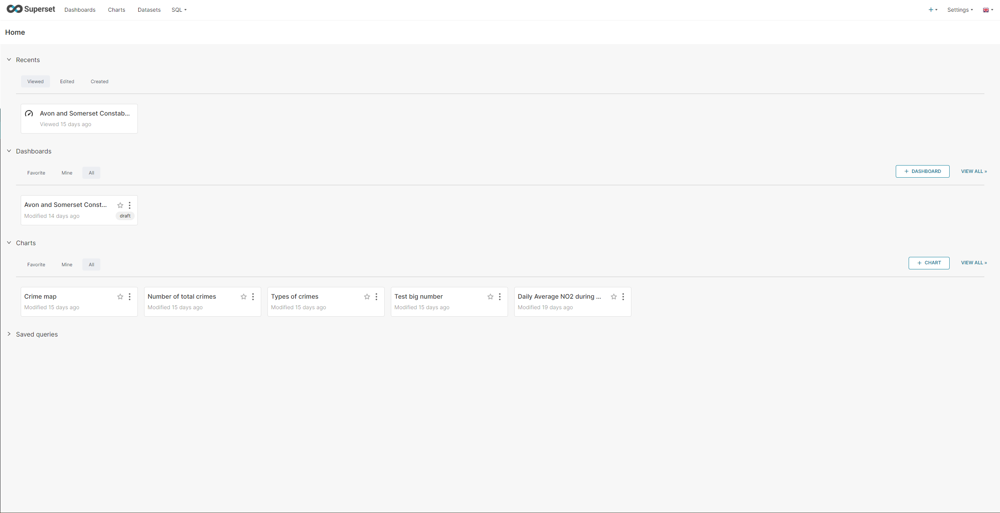
Step 2: Creating datasets
- Click on the DATASETS button at the top-left menu and click on the +DATASET button at the top-right part of the view that you have arrived.

- Introduce the database, schema and table that you want to import from the possible sources and click CREATE DATASET AND CREATE CHART button.
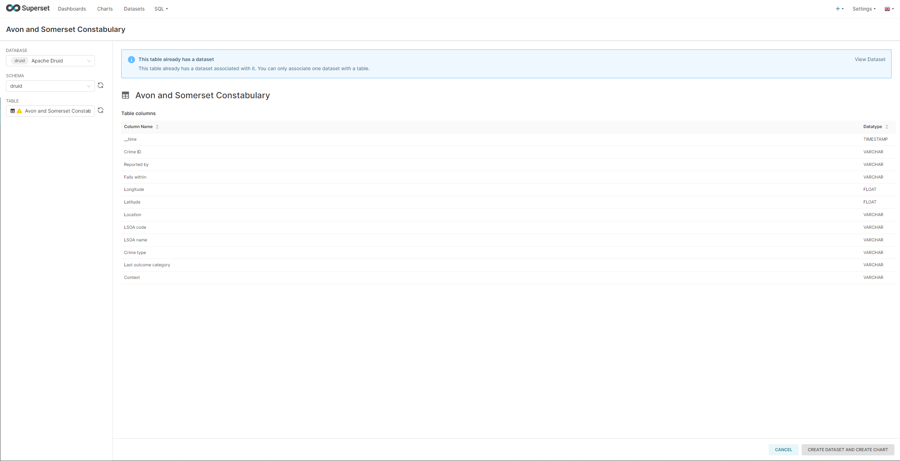
- NOTE: In case that you want to connect Apache Superset to a new database or source contact with ruben.sanchez@deusto.es
Step 3: Creating charts
- Click on the CHARTS button at the top-left menu and click on the +CHART button at the top-right part of the view that you have arrived.
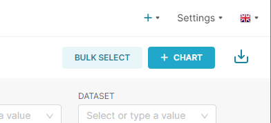
- For the chart creation you should select a dataset and a chart type to show the data.
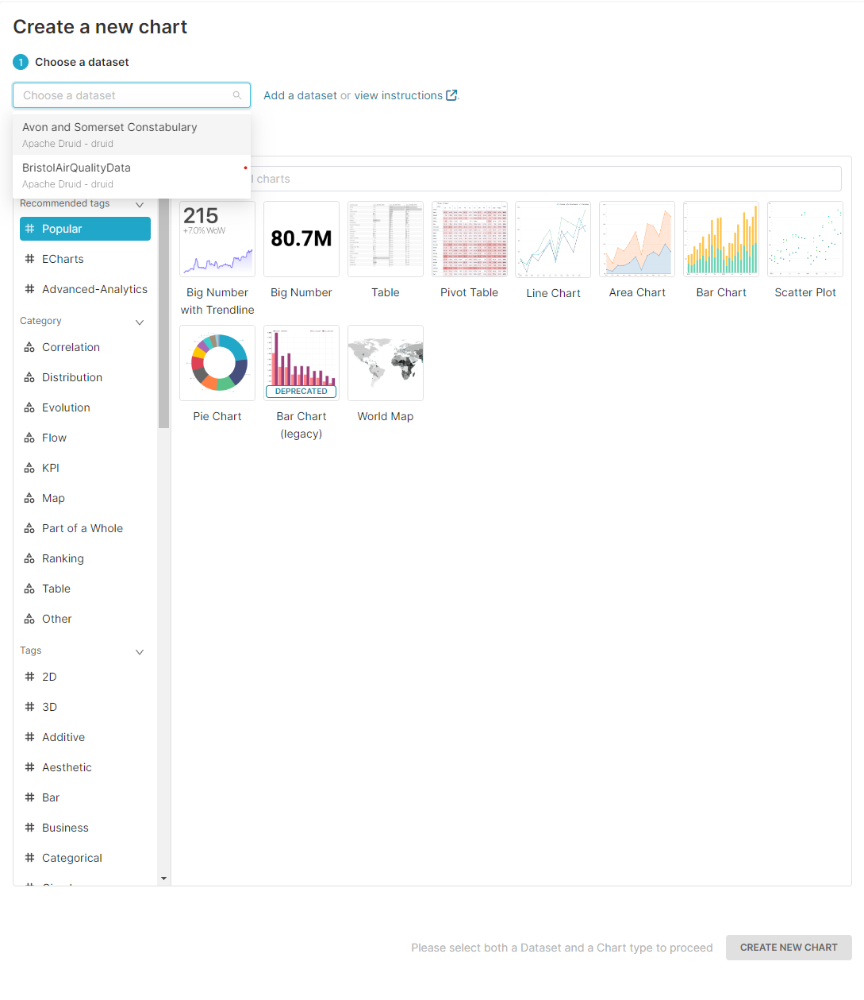
- Once in the chart editing view, you should add a name to the chart. In this view you have two columns: the left one has all the rows from the dataset yout selected and the right one has the settings for the chart. Once you have selected the right settings, click on the CREATE CHART button at the bottom of the second column. Note that to upload the chart you will have to click again in a button that updates it in the same position as the previous one.
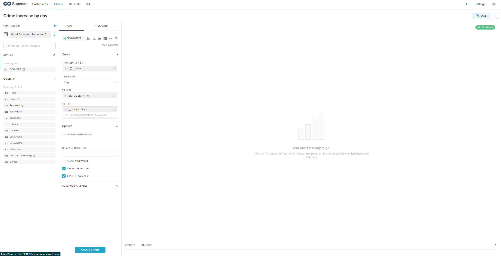
Step 4: Creating dashboards
- Click on the DASHBOARDS button at the top-left menu and click on the +DASHBOARD button at the top-right part of the view that you have arrived.
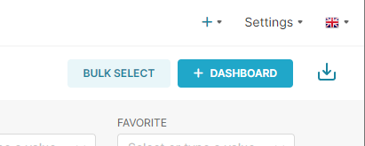
- Once in the dashboard creation view, you should add a name to the dashboard. In this view you can add already created charts that appear in the right side or create new charts. Furthermore, you can add new Layout elements such as headers, text or dividers.
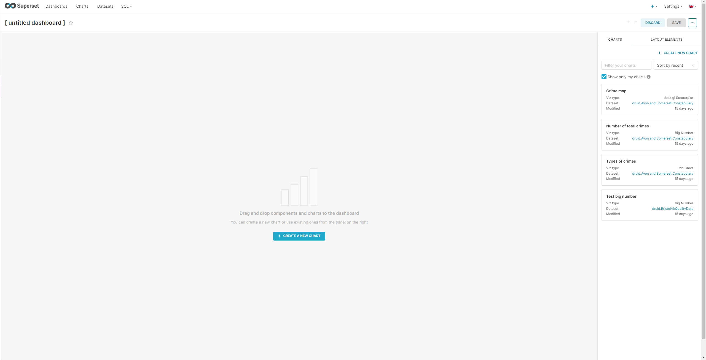
Extra: Executing SQL queries to imported datasets
- Accessing to the SQL view using the button at the top left menu you can access a SQL statement executor against the datasets imported in Superset.
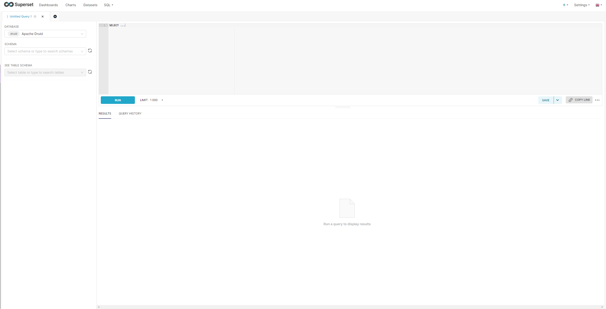
Creating a chart from geo sources
- First of all, create a chart with the desired data source. For geographical sources, the best is to put the "map" word into the search bar to find all the map-based charts.
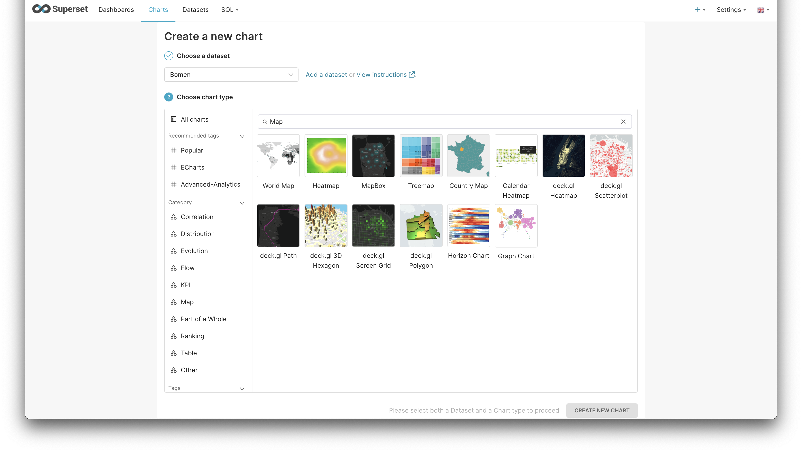
- Once in the chart editing view, you should identify the fields regarding latitude and longitude. Note that if both fields are in one field they may be inverted.
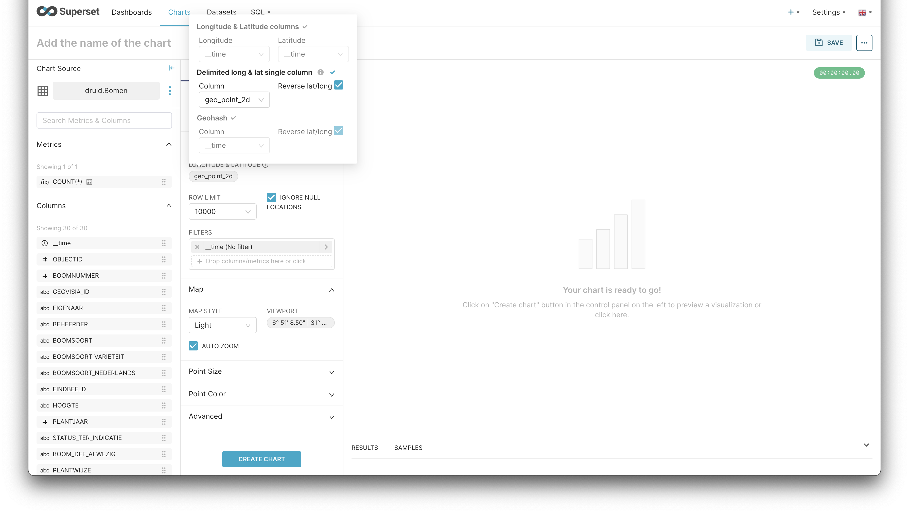
- Once the settings are set, create or update the chart to visualise it.
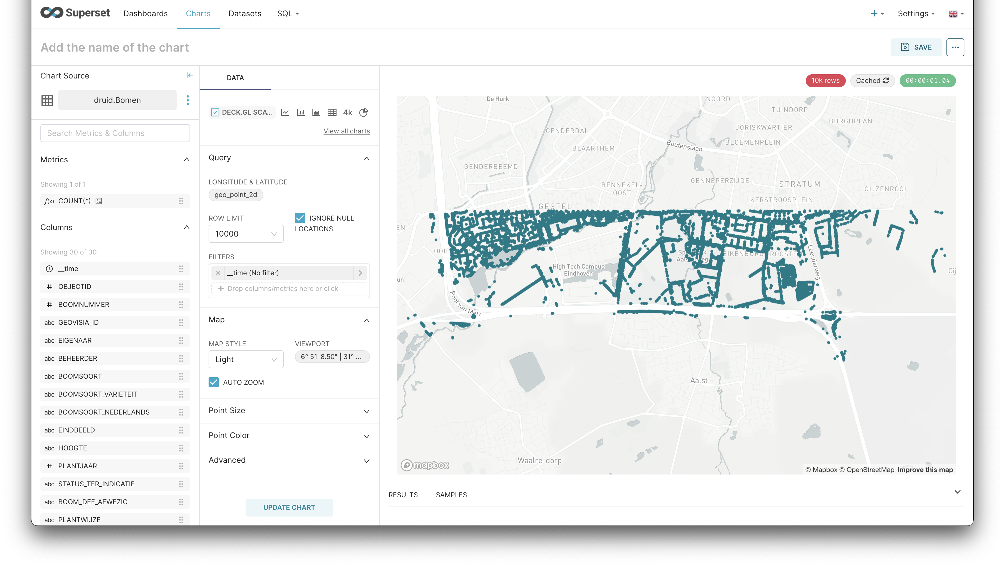